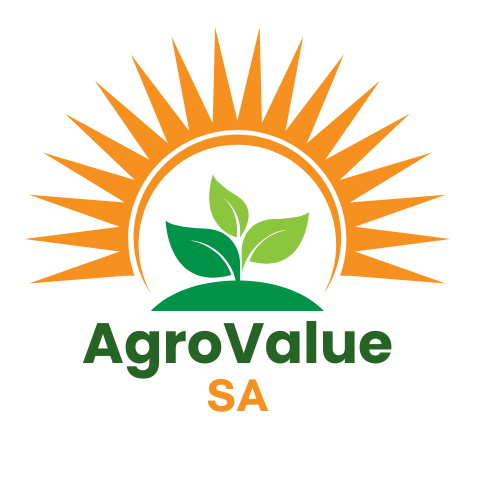
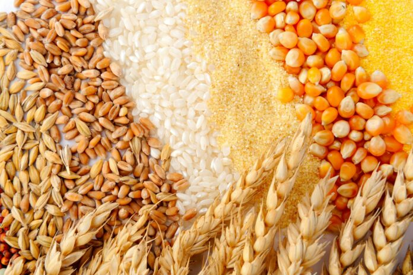
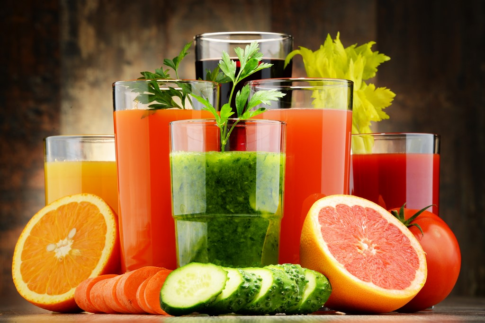
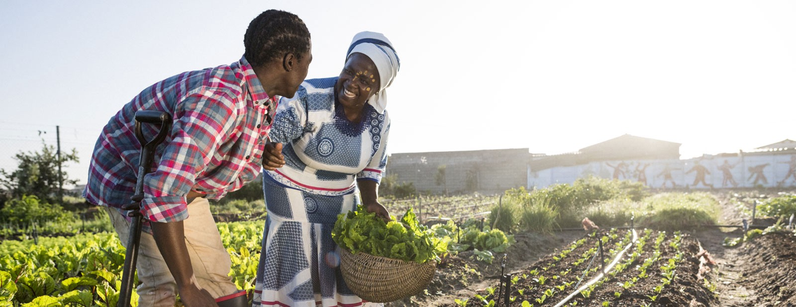

L'excellence agroalimentaire
Depuis plus de 15 ans, nous nous engageons à fournir des produits agroalimentaires de qualité supérieure, cultivés dans le respect de l'environnement et des traditions agricoles sénégalaises. Notre mission est de valoriser les ressources locales tout en répondant aux standards internationaux les plus exigeants.

Nous transformons le mil, le sorgho et le maïs en produits finis de haute qualité. Nos céréales sont sélectionnées rigoureusement auprès de producteurs locaux certifiés, garantissant fraîcheur et authenticité. Chaque grain est traité selon des normes d'hygiène strictes pour préserver ses qualités nutritionnelles.

Nos jus naturels, confitures artisanales et fruits séchés capturent l'essence des saveurs tropicales. Sans conservateurs artificiels, nos produits conservent toutes les vitamines et le goût authentique des fruits fraîchement récoltés. Mangue, bissap, tamarin et baobab sont nos spécialités reconnues.

Nous travaillons exclusivement avec des agriculteurs pratiquant une agriculture responsable et durable. Notre approche favorise la rotation des cultures, la préservation des sols et l'utilisation minimale d'intrants chimiques. Nous soutenons également les coopératives agricoles locales à travers des programmes de formation et d'accompagnement technique.
Chaque produit AgroValue SA passe par des contrôles qualité rigoureux à chaque étape de la production. Notre laboratoire interne effectue des analyses microbiologiques et nutritionnelles régulières. Nous sommes certifiés ISO 22000 et respectons les normes HACCP pour garantir la sécurité alimentaire de nos clients.